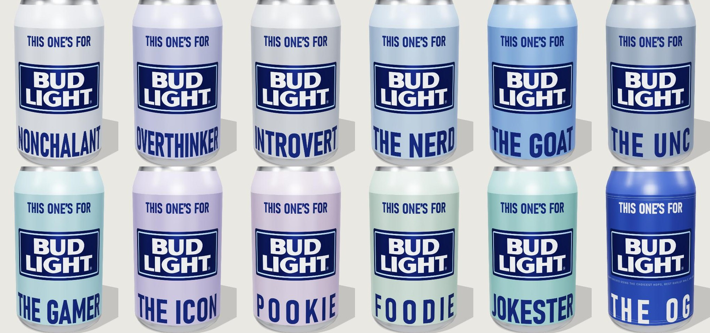
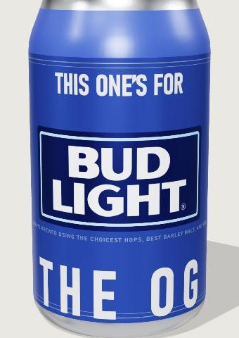

1What went wrong
Bud Light has been aging with its customers for over a decade. The 2023 boycott made it worse, and today young drinkers know it but don't choose it.
The decline started long before 2023
Bud Light shipments were already falling 13.4% between 2011 and 2016 (24/7 Wall St.). Analysts said the generation that drank Bud, Miller and Coors was aging out of beer, while younger drinkers moved to brands like Modelo (ABC News). To young people it became "just a light beer" (CNN via WRAL).
2023 made it worse
After the Dylan Mulvaney backlash, sales fell 28% in three months and about 15% of loyal drinkers switched to other brands (Harvard Business Review study). In 2025 Michelob Ultra passed Bud Light as America's best-selling beer (8.5% vs 8.46% share, Circana).
Where it stands now
- Volume keeps falling: about 12.7M barrels in 2026 vs 15.8M in 2024 (Evercore ISI via FT).
- Today's buyers skew older: index 108 for ages 45+, 86 for 21–44 (Numerator).
- 39% of Gen Z have tried Bud Light (Statista 2026), yet it is not in any generation's "would buy next" top 10 (YouGov 2026). Young people drink it at parties but don't pick it themselves est.
See the evidence
- Ad spend Jan–Jul down 14%, with money moved to Michelob Ultra (FT via Vinetur).
- Retail volume Sept 2025 −9.9% (Beer Marketer's Insights via Forbes).
- CNN, March 2026: Bud Light sales "have never fully recovered" from 2023.
- HBR study: the drop was steeper in more Republican counties; lost shelf space and tap handles kept sales down afterwards.
2Who Bud Light is today
An affordable, easy-drinking American light lager with a fun voice ("Dilly Dilly"), still marketed mostly to its older core.
Brand positioning and current customers
Bud Light is a 4.2% American light lager: easy to drink, cheaper than imports, made for sharing. Since 2023 its marketing has gone back to its core audience: NFL, UFC and country music, with Peyton Manning, Shane Gillis and Post Malone in the Super Bowl LX "Keg" spot. The execution is strong, but it buys attention rather than giving a reason to choose it, and the TikTok account had only about 1,000 followers (brand analysis, Nov 2026).
So the focus moves from defending to growing
Three years of win-back marketing to the older core have not brought sales back, and those drinkers are aging out. We keep older drinkers (classic can, OG and UNC cans) but put the growth effort on new, young drinkers. Why we dropped a pure win-back plan: section 7.
Competitors and their positions
- Imports (Modelo, Corona, Heineken, Guinness) = the premium treat. Modelo is #1 by dollar sales; a 12-pack costs about $17–19.
- Michelob Ultra (our sister brand) = fitness and "be your best".
- Bud Light = the easy, affordable, fun choice (12-pack about $14–16).
SWOT
Strengths
- 83% awareness
- 39% of Gen Z have tried it
- AB InBev distribution
- Tradition of funny ads
Weaknesses
- Falling volume
- Not on any "buy next" top 10
- 2023 baggage
- Ad money shifted to Ultra
Opportunities
- Gen Z drinking rate rising
- Already at parties
- Personalised packs work (Share a Coke)
- Existing team-can system
Threats
- Imports winning Gen Z
- Spirits and canned cocktails
- Young people drinking less
- Ultra competing in-house
3The opportunity: Gen Z
Gen Z, ages 21–28, all genders, at group get-togethers: house parties, tailgates, backyard BBQs. US only. This widens the audience; it does not replace older drinkers.
Why Gen Z is a real beer market
- More of them drink, not fewer: legal-age US Gen Z drinking rose from 68% to 71% in two years (IWSR via Food Dive, 2026).
- Beer is still a main drink: spirits 50%, cocktails 46%, beer 44%, canned cocktails 42% (Attest 2026).
- A classic US beer can win them: Budweiser is #5 on Gen Z's "buy next" list (23.2%), next to Guinness and Heineken (YouGov). Bud Light isn't there yet.
Old brands have won young drinkers before
- Guinness: a "dad's beer" went viral with Gen Z through the TikTok "split the G" game and creators. Global sales +13% and volume +14% in FY2025, while its parent Diageo grew only 0.9% (drinks intel, Marketing Week). Closest model for us: old brand + social game + young drinkers.
- Old Spice (2010): turned "grandpa's brand" young, sales about +107% in a month, by laughing at itself, not at its old buyers (SymphonyIRI via Ad Age).
- Share a Coke: personalised cans lifted young-adult consumption +7% in Australia and ended 11 years of US decline (WSJ via Entrepreneur).
- What not to do, Oldsmobile (1988): "This is not your father's Oldsmobile" pushed away old buyers and never won young ones; the brand ended in 2004 (Hagerty).
See the evidence
- IWSR concludes the "sober Gen Z" story is a myth for legal-age drinkers (The Spirits Business).
- Women: only 16% of women drinkers pick beer first vs 56% of men (Gallup 2026), so women are covered inside Gen Z rather than as a separate core.
- Guinness growth later slowed (+4.6% in four weeks, Aug 2025, The Grocer): one viral moment isn't enough, which is why our campaign runs all season (section 5).
- College sports partnerships are allowed (Bud Light had 28 college team cans in 2025, On3); ads must reach audiences at least 73.8% aged 21+ (Beer Institute code).
4Our product: personality cans
Same Bud Light, 12 personality cans. Each can carries one word for a type of person. Buy one for yourself, or for a friend ("that's so you").
Crew Pack: a 12-pack with one of each personality. One can is "your can"; the 12-pack is "your crew".
Product positioning: personality, made easy
The brand is easy and fun; the product adds "be yourself inside your crew". It is a sticker on your laptop, not a premium badge: fun, not prestige. That is how we compete with imports without competing on price or status.
- A word, not a name: a name says nothing about your personality, and printing names would just copy Coke.
- 12 words: easier to stock than hundreds of names. Words are current Gen Z slang that is still rising ("nonchalant" +701%, Synthesio); fading words like "rizz" (−68%) were dropped.
- UNC and OG are there for long-time drinkers.
We also looked at a non-alcoholic version, a lower-alcohol can and a new flavour, and dropped all three: see section 7.
Can design: why it looks like this

- The navy BUD LIGHT box never changes. Changing the part people recognise is dangerous: when Tropicana replaced its famous pack in 2009, sales fell about 20% in two months (about $33M) and it switched back (Bloomberg).
- Only the background colour changes. Bud Light already does exactly this: its NFL and college team cans change the whole colour but keep the box (Packaging Digest), and sales went up, not down: markets with NFL cans grew 3.8% in 2015, and distributor orders the next year rose nearly 200% (Sports Business Daily, AB's own figures).
- Colours come from the Bud Light blue family, so all 12 still read as Bud Light on the shelf.
- Standard 12 oz can, like the team cans. Slim cans signal a different drink (Bud Light Next, Seltzer).
- Short words get THE (THE NERD, THE GOAT) so the line isn't empty.


- It keeps the exact classic look (royal blue, white type, "Always brewed using the choicest hops…", double rules) so long-time drinkers still recognise their beer.
- It tells them they are part of the crew too.
- In Gen Z slang OG means "the original", so young people can be OG too.
See the evidence
- Coke's 2011 white holiday cans were confused with Diet Coke and pulled early (BevNET); Bud Light has no same-shape look-alike (Next uses a slim can).
- Special editions can make a brand harder to find; keeping familiar cues and showing the pack before launch helps (Shepherd & Fitzsimons 2020).
- New can art costs only one-time design and plate fees est.
- "THIS ONE'S FOR NONCHALANT" bends grammar on purpose, like Apple's "Think different".
Price
| 12-pack (Walmart, ABC Fort Smith) | Shelf price |
|---|---|
| Bud Light | about $14–16 |
| Michelob Ultra | $16–17 |
| Modelo | $17–18.5 |
| Corona | $18–19 |
- No price cut on the beer. Bud Light is already cheaper than imports: "affordable for the whole crew".
- The Crew Pack gets a time-limited launch offer (summer BBQ and football season), then returns to list price.
- No cheap 30-pack war: Busch Light and Natural Light own the ~$20 30-pack, and Busch Light is also AB's.
5How we launch it
Your can. Your crew. "Your can" = personalisation; "your crew" = the group occasion.
Launch ad
The dad can tells a corny joke → the kid can rolls its eyes: "No more dad jokes" → friends open a Crew Pack and hand out "THIS ONE'S FOR ___" cans → the dad can's joke still lands at his own tailgate. Both generations keep their party. "No more dad jokes" stays a line in the ad, never the slogan, because a slogan travels alone and would read as rejecting older drinkers.
Where it runs
TikTok and Instagram (age-gated), where 21–28s are and where Bud Light is almost absent; 21+ festivals and sports venues; the classic can stays on football and TV.
Activation: Deck Your Can + Crew League
- Open the online can decorator (21+ age gate).
- Decorate a can with stickers from the 12 team packs, or upload your own.
- Get a result card: "My can = 40% FOODIE + 30% NERD + …", then rep a team or stay "100% me".
- Share it on Instagram and TikTok with the team tag.
- Why a mix: it says everyone is several personalities (anti-stereotype), and result cards get shared, like Spotify Wrapped.
- Score = unique people using a team's stickers. Not likes (big accounts and bought likes would decide it), and no points for buying (looks pay-to-win and pushes drinking more).
- Weekly challenges with a home week per team (trivia for NERD, snacks for FOODIE…); showing up is enough. A season-long league keeps interest after the first viral moment.
- Pick the 13th: fans suggest a missing personality → brand shortlists 4 → public vote (21+) → the winner becomes a limited 13th can.
See the evidence
- Twix "Left vs Right" built rivalry with no scoreboard; reported +13.2% global sales in Q1 2013 (Cannes Lions).
- Oreo "Cookie vs Creme": the brand picked fan photos and turned them into sculptures (Cannes Lions).
- Lay's "Do Us a Flavor": +12% sales in the first week, $22M extra in five weeks (self-reported, Cannes Lions).
- "Boaty McBoatface" (UK, 2016): an open public vote gets trolled, so we shortlist first.
- Pokémon GO's three teams: people care when their actions change the result.
- Uploaded stickers are reviewed: no minors, no heavy drinking, no copied art; cartoon style is fine but nothing aimed at kids (the 1990s Budweiser frogs were criticised for that).
Influencers and budget
- A few headline creators for reach, most of the budget on many small creators: small creators cost far less and usually get higher engagement.
- 1–2 creators per personality with mostly 21+ audiences (NERD → trivia or science-comedy creators; GAMER → adult streamers).
- Team OG: a stylish older "granfluencer" plus a young "OG of the friend group".
- Bud Light's ad spend is already down 14%, so we concentrate: US only, one main activation, mostly small creators; the can change itself only adds one-time design fees.
See the evidence
- Instagram per post: nano $20–200, micro $100–5,000, macro $5,000–10,000+ (Meltwater). TikTok: nano $5–200, micro $200–1,200, top $7,000+ (Shopify).
- All creators label #ad / #sponsored (FTC), no heavy drinking, no minors.
- No total budget was given in the brief; any total in the report is our estimate.
6Risks and how we handle them
Older drinkers feel pushed out
Response: the classic can stays unchanged on shelf and on TV; UNC and OG cans are for them; the dad can keeps his party; no "not your father's" slogans (the Oldsmobile lesson). Can words never touch gender, race, body or drinking amount: one careless label line ("Up for Whatever", 2015) was enough to cause a scandal.
Shoppers can't find the brand
Response: the box never changes, OG = classic can, and the new cans appear in ads before launch (the Tropicana lesson).
Can't find your own personality
Response: every Crew Pack has all 12; swapping cans is part of the fun; bars rotate all 12. Share a Coke had hundreds of names and many people couldn't find theirs, yet US sales still rose about 2–2.5% (Entrepreneur). We have only 12.
The hype fades
Response: Guinness slowed after its viral peak, so the Crew League runs all season with weekly challenges and the 13th-can vote.
Still open
- Crew Pack launch price ($12.99 suggested, not decided).
- Printed samples and prototypes, back of can, final materials.
7Options we considered and dropped
Every option below was discussed seriously. Here is why each one lost.
Audience and strategy
Focus on winning back the old customers
Dropped because: AB has done exactly this since 2023 (UFC, NFL, Peyton Manning, Shane Gillis) and sales "have never fully recovered" (CNN 2026); the drinkers lost in 2023 have not come back at any visible rate (Beer Business Daily via Fox News); over 60% left over values or image (Numerator via WARC), so winning them back means taking a political side; and this group is aging out of beer. We keep them, but we don't build the campaign around them.
Women as the core target
Dropped because: only 16% of women drinkers pick beer first vs 56% of men (Gallup 2026), and AB already serves canned-cocktail drinkers with Lime-A-Rita. Women are included inside Gen Z.
A patriotic "American" angle
Dropped because: only 41% of Gen Z are very proud to be American vs 75% of Boomers (Gallup); it splits by party (92% R vs 36% D), which re-opens 2023; Budweiser already did the "America" can in 2016; and AB InBev is Belgian-owned.
Going overseas
Dropped because: Bud Light sells almost only in the US, AB already has Corona and Budweiser abroad, and with ad spend down 14% spreading out would thin the money.
Product
A non-alcoholic Bud Light
Dropped because: the market is growing (about +22% a year, Circana) but the top 10 suppliers already hold 87% (Brewbound); AB's own Michelob ULTRA Zero became the #1 US non-alcoholic beer about a year after its January 2025 launch, passing Heineken 0.0; AB also sells Budweiser Zero, Busch NA and O'Doul's. We would arrive late and take sales from our own sister brand. For Gen Z, non-alcoholic is mostly an add-on to regular drinks, not a replacement (37.5% → 40.8% drink low/no beer alongside alcohol, Morning Consult).
A 3% "Session Can"
Dropped because: we found no sales data showing demand for under-4% beer, and Bud Light is already 4.2%, so 3% is barely different.
A new flavour
Dropped because: Bud Light Lime fell 11% in 2016, and Lime-A-Rita already covers the flavoured space.
Writing your own name on the can
Dropped because: cold cans sweat and markers smear; a name also says nothing about personality, and printed names would just copy Share a Coke.
Name stickers only inside the 12-pack
Dropped because: single-can buyers would be left out, and it isn't how personalised packs usually work.
A scratch-off area
Dropped because: it doesn't feel Gen Z and says nothing about who you are (Bud Light tried scratch-off names on bottles in 2011; no results found).
24 personalities
Dropped because: too many to stock, and each single can would sell worse. Cut to 12.
A 30-pack price cut
Dropped because: the ~$20 30-pack is where Busch Light and Natural Light compete (about $0.67 a can); cutting price there drags Bud Light into "cheapest beer", hurts margin and steals from Busch Light (also AB's, +7.5% in 2024).
Can design
Shrink sleeves, peel-off or book-style labels on every can
Dropped because of cost: a sleeve costs about 2–2.5× a printed can, roughly $1.5–2.5 more per 12-pack, and digital printing about 1.5–3× per can est., industry estimates. A normal printed can only adds one-time design and plate fees, so the 12 designs are printed directly; special labels are kept for the small "13th can" batch at most.
A slim can
Dropped because: Bud Light uses slim cans for different drinks (Next, Seltzer). Same beer should look like the same can, as with the team cans.
Changing the BUD LIGHT box or wordmark
Dropped because: that is the Tropicana mistake (sales −20% in two months, about $33M). The box stays fixed; only the background colour changes.
A holographic finish
Parked: materials and finishes are decided with the printed prototypes.
Handwritten personality words
Dropped because: they don't fit Bud Light's bold, all-caps look.
"I'M NOT ___" / "NOT ___" stickers on the can
Dropped because: next to the logo it can read as "I'm not Bud Light", the same line boycotters used in 2023. The self-roast moved to ads and social.
White or silver cans with a sticker-style box
Dropped because: next to each other, the colour family looked more like one product line, and the box looked pasted on.
Slogan, ads and activation
"No more dad jokes" as the slogan
Dropped because: a slogan travels alone, without the ad's happy ending, and would read as rejecting older drinkers (Oldsmobile). Showing it only on young channels doesn't help: the 2023 post was on Instagram too and still exploded. It stays as a line in the ad.
"Old can turns into young can" ad
Dropped because: it retires the old drinkers, the Oldsmobile trap.
"Dad can tries to join the young party" ad
Dropped because: it hits the cringe "How do you do, fellow kids?" meme.
"Bad at Sports Club"
Dropped because: a can is held in public, and nobody wants it to say they're bad at sports.
Random prize draws
Dropped because: winning by luck gives people nothing to do.
Points for buying cans
Dropped because: it looks like paying to climb a chart, US sweepstakes generally need a free way to enter est., and points per can would encourage drinking more, against the beer ad code.
Scoring by likes or hashtag heat
Dropped because: one big creator could outweigh thousands of fans, and likes can be bought.
·Key sources
Show all links
- 24/7 Wall St., Bud Light 2011–2016 decline — https://247wallst.com/special-report/2017/12/22/beers-americans-no-longer-drink-4/3/
- ABC News, Modelo becomes No. 1 — https://www.click2houston.com/news/local/2023/06/16/how-modelo-especial-became-americas-no-1-beer-amid-bud-lights-rapid-decline
- HBR study summary, boycott one year later — https://www.ebsco.com/articles/political-science/5dfde4f4-43f6-56e8-ae61-54f7930f15d8/lessons-from-the-bud-light-boycott-one-year-later
- Fox News, lost drinkers not back — https://www.foxnews.com/media/bud-light-hasnt-rebounded-one-year-mark-dylan-mulvaney-fiasco-approaches-very-stubborn-boycott
- YouGov 2026 generational rankings — https://yougov.com/en-us/articles/55605-us-alcohol-beverage-rankings-generational-splits-2026
- drinks intel, Guinness and Gen Z — https://drinks-intel.com/cross-category/gen-z-isnt-killing-alcohol-the-brands-that-are-crushing-it-while-the-drinks-industry-struggles-comment/
- Marketing Week, Guinness younger drinkers — https://www.marketingweek.com/guinness-women-younger-drinkers/
- The Grocer, Guinness slowdown — https://www.thegrocer.co.uk/comment-and-opinion/the-guinness-boom-may-be-over-but-its-remarkable-resurgence-is-still-worth-toasting/708439.article
- Hagerty, Oldsmobile — https://www.hagerty.com/media/?p=112173
- Morning Consult, Gen Z drinking — https://morningconsult.com/articles/gen-z-drinking-trends-sober
- Synthesio, Gen Z slang — https://www.synthesio.com/blog/gen-z-slang-brands-social-listening/
- Bloomberg, Tropicana 2009 — https://www.bloomberg.com/news/articles/2009-04-02/tropicana-fiasco-from-arnell-is-gift-that-keeps-giving
- Packaging Digest, "Same Brand, Different Can" — https://www.packagingdigest.com/packaging-design/same-brand-different-can-how-consistency-gives-bud-light-s-limited-editions-room-to-play
- On3, Bud Light college football cans — https://www.on3.com/news/bud-light-unveils-limited-edition-college-football-cans-partners-with-28-teams
- BevNET, Coke white cans 2011 — https://www.bevnet.com/news/2011/coke-puts-the-freeze-on-arctic-white-cans
- Shepherd & Fitzsimons 2020 — https://scholars.duke.edu/publication/1431119
- Share a Coke sales (WSJ via Entrepreneur) — https://www.entrepreneur.com/article/237905
- Lay's Do Us a Flavor — https://lovethework.com/work-awards/campaigns/lays-do-us-a-flavor-246547
- Oreo Cookie vs Creme — https://www.lovethework.com/work-awards/campaigns/oreo-cookie-227737
- Twix Left vs Right — https://www.lovethework.com/work-awards/campaigns/left-twix-right-twix-pick-a-side-43269
- Influencer rates — https://www.meltwater.com/en/blog/influencer-marketing-costs-rates-pricing · https://shopify.com/blog/influencer-pricing